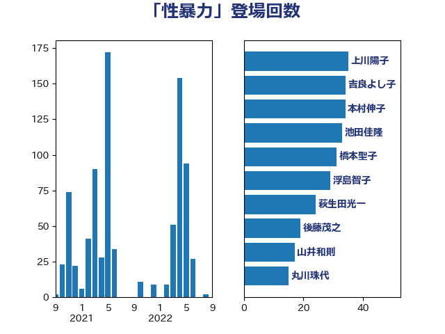

単語「性暴力」

| 上川陽子 | 自由民主党 | 35 回 |
| 吉良よし子 | 日本共産党 | 34 回 |
| 本村伸子 | 日本共産党 | 34 回 |
| 池田佳隆 | 自由民主党 | 33 回 |
| 橋本聖子 | 無所属 | 31 回 |
| 浮島智子 | 公明党 | 29 回 |
| 萩生田光一 | 自由民主党 | 24 回 |
| 後藤茂之 | 自由民主党 | 19 回 |
| 山井和則 | 立憲民主党 | 17 回 |
| 丸川珠代 | 自由民主党 | 15 回 |
| 堤かなめ | 立憲民主党 | 15 回 |
| 梅村みずほ | 日本維新の会 | 15 回 |
| 野田聖子 | 自由民主党 | 15 回 |
| 斎藤嘉隆 | 立憲民主党 | 13 回 |
| 古川禎久 | 自由民主党 | 12 回 |
| 谷田川元 | 立憲民主党 | 12 回 |
| 菅義偉 | 自由民主党 | 10 回 |
| 佐々木さやか | 公明党 | 9 回 |
| 古賀友一郎 | 自由民主党 | 9 回 |
| 山添拓 | 日本共産党 | 8 回 |
| 末松信介 | 自由民主党 | 8 回 |
| 鰐淵洋子 | 公明党 | 8 回 |
| 上野通子 | 自由民主党 | 7 回 |
| 今井絵理子 | 自由民主党 | 7 回 |
| 伊藤孝恵 | 国民民主党 | 7 回 |
| 吉川赳 | 無所属 | 7 回 |
| 岸田文雄 | 自由民主党 | 7 回 |
| 横沢高徳 | 立憲民主党 | 7 回 |
| 田村智子 | 日本共産党 | 7 回 |
| 舩後靖彦 | れいわ新選組 | 7 回 |
| 豊田俊郎 | 自由民主党 | 7 回 |
| 塩村あやか | 立憲民主党 | 6 回 |
| 高木かおり | 日本維新の会 | 6 回 |
| 倉林明子 | 日本共産党 | 5 回 |
| 古屋範子 | 公明党 | 5 回 |
| 太田房江 | 自由民主党 | 5 回 |
| 福島みずほ | 社会民主党 | 5 回 |
| 三ッ林裕巳 | 自由民主党 | 4 回 |
| 小池晃 | 日本共産党 | 4 回 |
| 山田勝彦 | 立憲民主党 | 4 回 |
| 岩渕友 | 日本共産党 | 4 回 |
| 梅村聡 | 日本維新の会 | 4 回 |
| 牧島かれん | 自由民主党 | 4 回 |
| 赤澤亮正 | 自由民主党 | 4 回 |
| 勝目康 | 自由民主党 | 3 回 |
| 吉田とも代 | 日本維新の会 | 3 回 |
| 安江伸夫 | 公明党 | 3 回 |
| 宮崎政久 | 自由民主党 | 3 回 |
| 宮路拓馬 | 自由民主党 | 3 回 |
| 松野博一 | 自由民主党 | 3 回 |
| 泉健太 | 立憲民主党 | 3 回 |
| 福山哲郎 | 立憲民主党 | 3 回 |
| 西岡秀子 | 国民民主党 | 3 回 |
| 高木毅 | 自由民主党 | 3 回 |
| 上野賢一郎 | 自由民主党 | 2 回 |
| 伊藤孝江 | 公明党 | 2 回 |
| 吉川元 | 立憲民主党 | 2 回 |
| 塩川鉄也 | 日本共産党 | 2 回 |
| 宮本岳志 | 日本共産党 | 2 回 |
| 山口俊一 | 自由民主党 | 2 回 |
| 山口那津男 | 公明党 | 2 回 |
| 岡本あき子 | 立憲民主党 | 2 回 |
| 岸真紀子 | 立憲民主党 | 2 回 |
| 川田龍平 | 立憲民主党 | 2 回 |
| 木原誠二 | 自由民主党 | 2 回 |
| 津島淳 | 自由民主党 | 2 回 |
| 玉木雄一郎 | 国民民主党 | 2 回 |
| 田名部匡代 | 立憲民主党 | 2 回 |
| 田所嘉徳 | 自由民主党 | 2 回 |
| 稲田朋美 | 自由民主党 | 2 回 |
| 足立康史 | 日本維新の会 | 2 回 |
| 下野六太 | 公明党 | 1 回 |
| 吉田宣弘 | 公明党 | 1 回 |
| 和田政宗 | 自由民主党 | 1 回 |
| 城井崇 | 立憲民主党 | 1 回 |
| 宮本徹 | 日本共産党 | 1 回 |
| 寺田学 | 立憲民主党 | 1 回 |
| 山東昭子 | 自由民主党 | 1 回 |
| 杉田水脈 | 自由民主党 | 1 回 |
| 柚木道義 | 立憲民主党 | 1 回 |
| 森山浩行 | 立憲民主党 | 1 回 |
| 清水貴之 | 日本維新の会 | 1 回 |
| 牧義夫 | 立憲民主党 | 1 回 |
| 田島麻衣子 | 立憲民主党 | 1 回 |
| 石垣のりこ | 立憲民主党 | 1 回 |
| 磯崎仁彦 | 自由民主党 | 1 回 |
| 福重隆浩 | 公明党 | 1 回 |
| 蓮舫 | 立憲民主党 | 1 回 |
| 長友慎治 | 国民民主党 | 1 回 |
| 高良鉄美 | 無所属 | 1 回 |